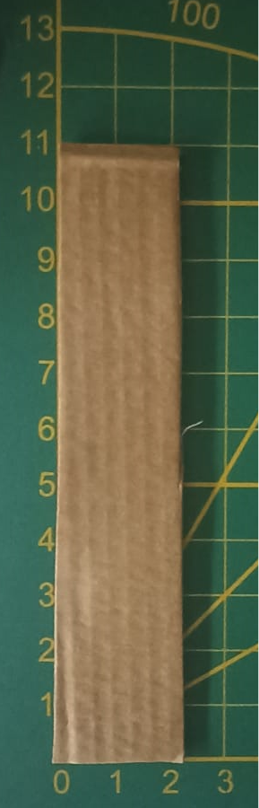
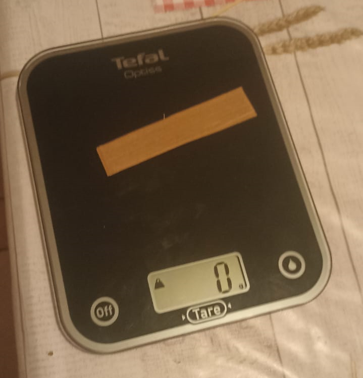
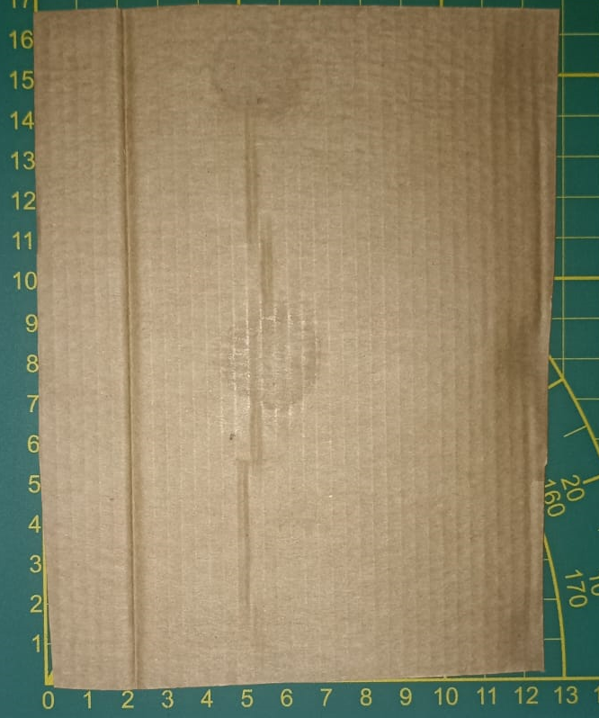
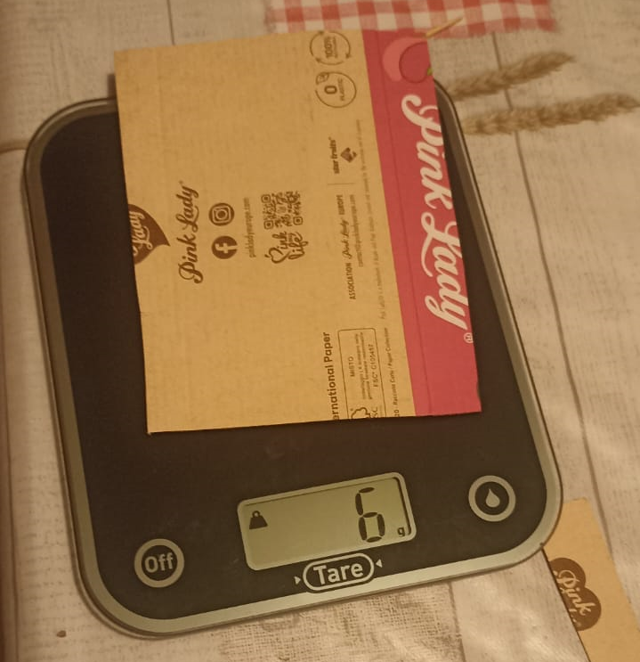
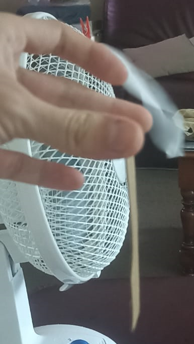
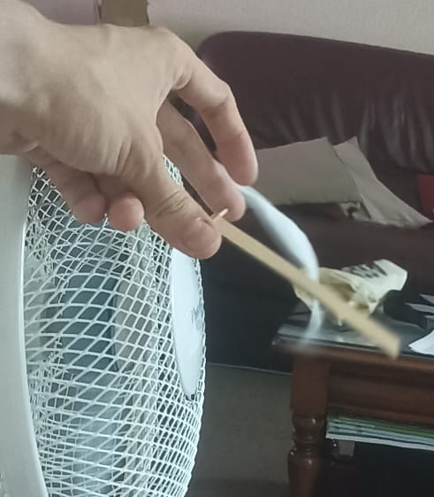

L'objectif de cette page est de fabriquer un anémomètre qui est un appareil qui détermine l'ordre de grandeur de la vitesse du vent.
On le fabriquera avec des matériaux sommaires : un bout de carton avec les dimensions que vous voulez (juste il faut que vous les notiez pour plus tard), et un cure-dent.
J'ai tout d'abord découpé un bout de carton de dimensions 2x11 cm (faites comme vous voulez pour le vôtre :) ) :

Pour appliquer la formule de calcul de la vitesse du vent (voir fin de la page pour la démonstration de la formule), il me fallait la masse :
Si on mesure la masse directement on obtient une valeur nulle (balance peu précise).

Pour contrer cela, on va mesurer la masse d'un plus grand bout de carton (de surface connue) et, par une règle de trois, on trouve la masse de notre barre de carton.


mbarre = mgros bout * surfacebarre / surfacegros bout = 0.64 g
La dernière étape (la vraie étape de mesure) consiste à mesurer l'angle entre la barre à l'équilibre (pas de vent) et avec le vent dont la vitesse est à mesurer :
On prend la valeur de x et y sur les photos (ou directement à la main si vous avez une règle) :


Avec un peu de trigonomètrie, on trouve la valeur de l'angle (calculé in situ dans le calculateur).
Il vous suffit désormais de rentrer les valeurs mesurées dans le calculateur en haut de la page pour obetnir un approximation de la vitesse du vent !
m : masse (g) // l : largeur de la barre (cm) // L : longueur de la barre (cm) // x, y en cm
Système : Barre en carton
Référentiel : Terrestre supposé galiléen à l'échelle de l'expérience
Bilan des forces exercées sur le système : Poids P, Force du vent Fvent
P = m * g * uy || m : masse, g : constante de gravitation terrestre = 9.81 m/s², uy vecteur unitaire dirigé vers le bas
F = Ppression * S car il s'agit d'une force de pression de l'air sur le système || Ppression : pression exercée par le vent sur la barre, S : surface projetée sur ux
Pdynamique s'exprime : Ppression = 1/2 * ρair * v² || ρ : masse volumique de l'air, v : vitesse du vent
S = l * L * cos(angle entre eq et vent appliqué)
On calcule le moment de ces forces : MΔ(P) = [OG(vecteur) ^ P(vecteur)].uz(vecteur) = 1/2 * m * r * g * sin(angle)
Idem : MΔ(F) = -1/4 * r * ρ * v² * l * L * cos(angle)²
On applique le théorème du moment cinétique scalaire à la barre à l'équilibre (LΔ(G) = 0) danr un référentiel galiléen :
m*r*g*sin(angle) = 1/4*ρ*v²*l*L*cos(angle)²
et v = [(4*m*g*sin(angle)) / (ρ*l*L*cos(angle)²)]^(1/2)
